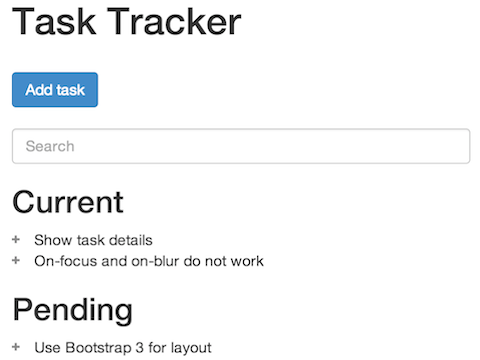
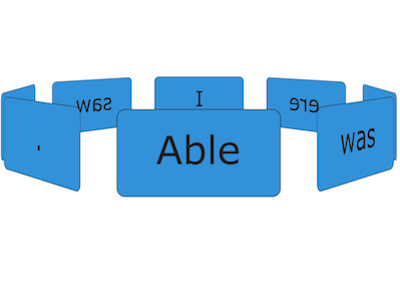

Dart Code Samples
Check out many other Dart code examples.
polymer.dart
Defining a custom element
Install Polymer, define and use a simple custom element.
More
Searchable List
Use data binding to make any list searchable.
More
Get input from a form
Use data binding to work with form data in Polymer.
More
TodoMVC
A Polymer implementation of the the canonical todo app.
More
Polymer and internationalization
Simple demonstration of internationalization and localization with Polymer.
More
A task management tool
A full Polymer app with multiple custom elements.
More

Tracker: A task management tool
Using JavaScript from Dart
Google Maps
Using the Google Maps JavaScript API with the dart:js library.
More
Using the Google Charts Visualization API
Intermediate level app that shows the use of JavaScript and Dart interoperability.
More
Fetching data using JSONP
Use JSONP to see the GitHub repos for dart-lang.
More

Using the JavaScript API with dart:js: Google Maps
Working with the I/O library
Searching files for content
A short app that shows how to work with file and directories asynchronously.
More
Concatenating files
Use streams to read files and process I/O.
More
Dartiverse Search: A search app using HttpServer and WebSockets
A full app with a server and a client to search for Dart on StackOverflow and GitHub.
More

Dartiverse Search: A search app using HttpServer and WebSockets
Animation and graphics
Working with requestAnimationFrame
A sample that demonstrates the correct way to use rAF.
More
2D solar system animation
A solar system implementation using Canvas.
More
3D solar system animation
A solar system implementation using WebGL.
More
Using image filters with canvas
Process pixels, run simple filters, and modify an image using convolution filters.
More
Shaped masks with StageXL
Simple demo showing flowers and the effect when different masks are applied.
More
Sprite sheet animations with StageXL
Initialize the StageXL Stage, and the RenderLoop. Use the FlipBook class to play sprite sheet animations.
More
Adobe Flash game ported to HTML5 using StageXL
From Flash to HTML5, with similarity between ActionScript and Dart making it easy to convert AS3 files to Dart.
More

FlipBook: Sprite sheet animations with StageXL
HTML5 persistence
LocalStorage 101
A dead-simple example that uses LocalStorage.
More
Simple todo app using IndexedDB
A todo app which persists data using IndexedDB.
More
Storing and retrieving data using IndexedDB
Create milestones and count down to them. Uses IndexedDB to store the milestones.
More
Exploring the FileSystem APIs
Read, write, and navigate to a sandboxed section of your local file system.
More
A terminal emulator that uses the FileSystem APIs
A Unix terminal in the web that manipulates the local file system.
More

Terminal: A terminal emulator that uses FileSystem APIs
Other HTML5 APIs
WebSockets 101
Example that opens a WebSocket connection to an echo server, and sends and receives data.
More
Basic HTML5 drag and drop
A simple demo of HTML5 Drag and Drop to move elements on a page.
More
Using Application Cache
Use Application Cache to tell the browser which files it should cache and make available to offline users.
More
Basic geolocation example
Calculate the distance traveled between locations.
More
Getting started with Web Audio API
Sample that shows processing and synthesizing audio using the Web Audio API.
More
Using the Files API
Select a file using a form input, or using drag and drop, and monitor progress while uploading a file.
More

Using the Files API
Touch events
Touch gestures and CSS 3D transforms
Sample that uses touch gestures and CSS 3D transforms to spin a palindrome on the page.
More
Multi touch
Fingerpainting with multiple touch points.
More

Swipe: Touch gestures and CSS 3D transforms
Web programming fundamentals
Adding elements to the DOM
A todo app using the dart:html library.
More
Moving elements within the DOM tree
Build anagrams: a DOM manipulation demo.
More
Removing elements from the DOM
A todo app with a delete option.
More
Working with JSON
A sample app that shows JSON data obtained from a form.
More
Fetching data dynamically
Using HttpRequest to fetch data.
More

Anagrams: Moving elements within the DOM tree